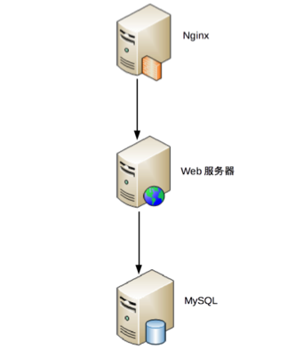

01 | 架构到底是指什么？
对于技术人员来说，“架构”是一个再常见不过的词了。我们会对新员工培训整个系统的架构，参加架构设计评审，学习业界开源系统（例如，MySQL、Hadoop）的架构，研究大公司的架构实现（例如，微信架构、淘宝架构）……虽然“架构”这个词常见，但如果深究一下“架构”到底指什么，大部分人也许并不一定能够准确地回答。例如：
- 架构和框架是什么关系？有什么区别？
- Linux 有架构，MySQL 有架构，JVM 也有架构，使用 Java 开发、MySQL 存储、跑在 Linux 上的业务系统也有架构，应该关注哪个架构呢？
- 微信有架构，微信的登录系统也有架构，微信的支付系统也有架构，当我们谈微信架构时，到底是在谈什么架构？
要想准确地回答这几个问题，关键在于梳理几个有关系而又相似的概念，包括：系统与子系统、模块与组件、框架与架构。
系统与子系统
我们先来看维基百科定义的“系统”。
系统泛指由一群有关联的个体组成，根据某种规则运作，能完成个别元件不能单独完成的工作的群体。它的意思是“总体”“整体”或“联盟”。
我来提炼一下里面的关键内容：
- 关联：系统是由一群有关联的个体组成的，没有关联的个体堆在一起不能成为一个系统。例如，把一个发动机和一台 PC 放在一起不能称之为一个系统，把发动机、底盘、轮胎、车架组合起来才能成为一台汽车。
- 规则：系统内的个体需要按照指定的规则运作，而不是单个个体各自为政。规则规定了系统内个体分工和协作的方式。例如，汽车发动机负责产生动力，然后通过变速器和传动轴，将动力输出到车轮上，从而驱动汽车前进。
- 能力：系统能力与个体能力有本质的差别，系统能力不是个体能力之和，而是产生了新的能力。例如，汽车能够载重前进，而发动机、变速器、传动轴、车轮本身都不具备这样的能力。
我们再来看子系统的定义。
子系统也是由一群有关联的个体所组成的系统，多半会是更大系统中的一部分。
其实子系统的定义和系统定义是一样的，只是观察的角度有差异，一个系统可能是另外一个更大系统的子系统。
按照这个定义，系统和子系统比较容易理解。我们以微信为例来做一个分析。
- 微信本身是一个系统，包含聊天、登录、支付、朋友圈等子系统。
- 朋友圈这个系统又包括动态、评论、点赞等子系统。
- 评论这个系统可能又包括防刷子系统、审核子系统、发布子系统、存储子系统。
- 评论审核子系统不再包含业务意义上的子系统，而是包括各个模块或者组件，这些模块或者组件本身也是另外一个维度上的系统。例如，MySQL、Redis 等是存储系统，但不是业务子系统。
模块与组件
模块和组件两个概念在实际工作中很容易混淆，我们经常能够听到类似这样的说法：
- MySQL 模块主要负责存储数据，而 ElasticSearch 模块主要负责数据搜索。
- 我们有安全加密组件、有审核组件。
- App 的下载模块使用了第三方的组件。
造成这种现象的主要原因是，模块与组件的定义并不好理解，也不能很好地进行区分。我们来看看这两者在维基百科上的定义。
软件模块（Module）是一套一致而互相有紧密关连的软件组织。它分别包含了程序和数据结构两部分。现代软件开发往往利用模块作为合成的单位。模块的接口表达了由该模块提供的功能和调用它时所需的元素。模块是可能分开被编写的单位。这使它们可再用和允许人员同时协作、编写及研究不同的模块。
软件组件定义为自包含的、可编程的、可重用的、与语言无关的软件单元，软件组件可以很容易被用于组装应用程序中。
可能你看完这两个定义后一头雾水，还是不知道这两者有什么区别。造成这种现象的根本原因是，模块和组件都是系统的组成部分，只是从不同的角度拆分系统而已。
从逻辑的角度来拆分系统后，得到的单元就是“模块”；从物理的角度来拆分系统后，得到的单元就是“组件”。划分模块的主要目的是职责分离；划分组件的主要目的是单元复用。其实，“组件”的英文 component 也可翻译成中文的“零件”一词，“零件”更容易理解一些，“零件”是一个物理的概念，并且具备“独立且可替换”的特点。
我以一个最简单的网站系统来为例。假设我们要做一个学生信息管理系统，这个系统从逻辑的角度来拆分，可以分为“登录注册模块”“个人信息模块”“个人成绩模块”；从物理的角度来拆分，可以拆分为 Nginx、Web 服务器、MySQL。
框架与架构
框架是和架构比较相似的概念，且两者有较强的关联关系，所以在实际工作中，这两个概念有时我们容易分不清楚。参考维基百科上框架与架构的定义，我来解释两者的区别。
软件框架（Software framework）通常指的是为了实现某个业界标准或完成特定基本任务的软件组件规范，也指为了实现某个软件组件规范时，提供规范所要求之基础功能的软件产品。
我来提炼一下其中关键部分：
- 框架是组件规范：例如，MVC 就是一种最常见的开发规范，类似的还有 MVP、MVVM、J2EE 等框架。
- 框架提供基础功能的产品：例如，Spring MVC 是 MVC 的开发框架，除了满足 MVC 的规范，Spring 提供了很多基础功能来帮助我们实现功能，包括注解（@Controller 等）、Spring Security、Spring JPA 等很多基础功能。
软件架构指软件系统的“基础结构”，创造这些基础结构的准则，以及对这些结构的描述。
单纯从定义的角度来看，框架和架构的区别还是比较明显的，框架关注的是“规范”，架构关注的是“结构”。框架的英文是 Framework，架构的英文是 Architecture。Spring MVC 的英文文档标题就是“Web MVC framework”。
虽然如此，在实际工作中我们却经常碰到一些似是而非的说法。例如，“我们的系统是 MVC 架构”“我们需要将 android app 重构为 MVP 架构”“我们的系统基于 SSH 框架开发”“我们是 SSH 的架构”“XX 系统是基于 Spring MVC 框架开发，标准的 MVC 架构”……
究竟什么说法是对的，什么说法是错的呢？
其实这些说法都是对的，造成这种现象的根本原因隐藏于架构的定义中，关键就是“基础结构”这个概念并没有明确说是从什么角度来分解的。采用不同的角度或者维度，可以将系统划分为不同的结构，其实我在“模块与组件”中的“学生管理系统”示例已经包含了这点。
从业务逻辑的角度分解，“学生管理系统”的架构是：

从物理部署的角度分解，“学生管理系统”的架构是：

从开发规范的角度分解，“学生管理系统”可以采用标准的 MVC 框架来开发，因此架构又变成了 MVC 架构：

这些“架构”，都是“学生管理系统”正确的架构，只是从不同的角度来分解而已，这也是 IBM 的 RUP 将软件架构视图分为著名的“4+1 视图”的原因。
重新定义架构
参考维基百科的定义，我将架构重新定义为：软件架构指软件系统的顶层结构。
这个定义看似很简单，但包含的信息很丰富，基本上把系统、子系统、模块、组件、架构等概念都串起来了，我来详细解释一下。
首先，“系统是一群关联个体组成”，这些“个体”可以是“子系统”“模块”“组件”等；架构需要明确系统包含哪些“个体”。
其次，系统中的个体需要“根据某种规则”运作，架构需要明确个体运作和协作的规则。
第三，维基百科定义的架构用到了“基础结构”这个说法，我改为“顶层结构”，可以更好地区分系统和子系统，避免将系统架构和子系统架构混淆在一起导致架构层次混乱。
小结
今天我为你梳理了与架构有关的几个容易混淆的概念，包括系统与子系统、模块与组件、框架与架构，解释了架构的定义，希望对你有所帮助。
这就是今天的全部内容，留一道思考题给你吧。你原来理解的架构是如何定义的？对比我今天讲的架构定义，你觉得差异在哪里？